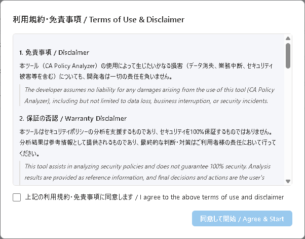

第1章: はじめに
CA Policy Analyzer ユーザーマニュアル
インストール
Microsoft Store からのインストール
Microsoft Store を利用すると、最も簡単にインストールできます。
- Microsoft Store を開き、検索バーに「CA Policy Analyzer」と入力して検索します。
- 検索結果から「CA Policy Analyzer」を選択し、「入手」ボタンをクリックしてインストールを開始します。
- インストールが完了すると、スタートメニューにアプリが追加されます。
Microsoft Store からインストールした場合、アプリの自動更新が有効になります。常に最新バージョンが自動的に適用されるため、手動でのアップデート作業は不要です。
サイドロード（手動インストール）
企業環境や Store へのアクセスが制限されている場合は、MSIX パッケージを使用して手動でインストールできます。
- 配布元から MSIX パッケージファイルをダウンロードします。
- ダウンロードした
.msixファイルをダブルクリックしてインストーラーを起動します。 - 証明書の信頼確認ダイアログが表示されたら、内容を確認し「インストール」をクリックして同意します。
サイドロードの場合、自動更新は行われません。新しいバージョンがリリースされた際は、最新の MSIX パッケージをダウンロードして手動でインストールしてください。
システム要件
| 項目 | 要件 |
|---|---|
| OS | Windows 10 バージョン 2004 (19041) 以降 / Windows 11 |
| ランタイム | WebView2 Runtime（通常 Windows に同梱されています） |
| ディスク | 約 100 MB |
| メモリ | 512 MB 以上 |
初回起動と利用規約

アプリを初めて起動すると、利用規約（EULA: エンドユーザー使用許諾契約）が表示されます。
- 利用規約の内容をよく読み、確認します。
- 内容に同意する場合は、「同意する」ボタンをクリックします。
- アプリのメイン画面が表示され、利用を開始できます。
同意しない場合、アプリは使用できません。同意状態はローカルに保存され、次回以降の起動時には表示されません。
同意状態は %LocalAppData%\CAPolicyAnalyzer\eula.dat に保存されます。このファイルを削除すると、次回起動時に再度利用規約が表示されます。
CA ポリシー JSON のエクスポート方法
CA Policy Analyzer でポリシーを分析するには、Microsoft Entra 管理センターから条件付きアクセスポリシーを JSON 形式でエクスポートする必要があります。
Microsoft Entra 管理センターからエクスポートする手順
- Microsoft Entra 管理センター (
https://entra.microsoft.com) にサインインします。 - 左メニューから「保護」→「条件付きアクセス」→「ポリシー」に移動します。
- 対象のポリシーを選択し、JSON 形式でエクスポートします。
- エクスポートした JSON ファイルを CA Policy Analyzer の「ポリシー読み込み」機能で読み込みます。
複数のポリシーを一括でエクスポートするには、Microsoft Graph API の GET /identity/conditionalAccess/policies エンドポイントを利用すると便利です。
このアプリにはサンプルの JSON ファイルが同梱されています。まず動作を試したい場合は、サンプルファイルを使って操作を確認できます。
画面構成の概要
メイン画面は以下の 4 つのタブで構成されています。
- ポリシー管理 — ポリシーの読み込み・編集・管理を行います。
- シミュレーション — What-If シナリオ（仮定の条件での検証）を実行します。
- 分析 — ギャップ分析（推奨構成との比較）と準拠状況を確認します。
- 変更履歴 — ポリシーの変更に関する監査ログを閲覧します。
左サイドバーには「ポリシー読み込み」ボタンと「分析設定」があり、どのタブからでもアクセスできます。
Chapter 1: Getting Started
CA Policy Analyzer User Manual
Installation
Installing from the Microsoft Store
The Microsoft Store provides the easiest way to install the application.
- Open the Microsoft Store and search for "CA Policy Analyzer" in the search bar.
- Select "CA Policy Analyzer" from the search results and click the "Get" button to begin installation.
- Once installation is complete, the app will be added to your Start menu.
When installed from the Microsoft Store, automatic updates are enabled. The latest version will be applied automatically, so no manual update steps are required.
Sideloading (Manual Installation)
For enterprise environments or situations where Store access is restricted, you can install manually using an MSIX package.
- Download the MSIX package file from the distribution source.
- Double-click the downloaded
.msixfile to launch the installer. - When the certificate trust confirmation dialog appears, review the details and click "Install" to proceed.
When sideloading, automatic updates are not available. When a new version is released, you will need to download and install the latest MSIX package manually.
System Requirements
| Item | Requirement |
|---|---|
| OS | Windows 10 version 2004 (19041) or later / Windows 11 |
| Runtime | WebView2 Runtime (typically bundled with Windows) |
| Disk | Approximately 100 MB |
| Memory | 512 MB or more |
First Launch and Terms of Use

When you launch the application for the first time, the End User License Agreement (EULA) will be displayed.
- Read and review the terms of use carefully.
- If you agree to the terms, click the "Accept" button.
- The main application screen will appear, and you can begin using the app.
If you do not agree, the application cannot be used. Your acceptance is saved locally and will not be shown again on subsequent launches.
The acceptance state is stored at %LocalAppData%\CAPolicyAnalyzer\eula.dat. Deleting this file will cause the EULA to be displayed again on the next launch.
How to Export CA Policy JSON
To analyze policies with CA Policy Analyzer, you need to export your Conditional Access policies from the Microsoft Entra admin center in JSON format.
Exporting from the Microsoft Entra Admin Center
- Sign in to the Microsoft Entra admin center (
https://entra.microsoft.com). - Navigate to "Protection" → "Conditional Access" → "Policies" from the left menu.
- Select the target policy and export it in JSON format.
- Load the exported JSON file into CA Policy Analyzer using the "Load Policies" feature.
To export multiple policies at once, you can use the Microsoft Graph API endpoint GET /identity/conditionalAccess/policies for bulk export.
The application includes sample JSON files. If you want to try out the features first, you can use the sample files to explore the application's functionality.
Screen Layout Overview
The main screen consists of the following four tabs:
- Policy Management — Load, edit, and manage your policies.
- Simulation — Run What-If scenarios to test hypothetical access conditions.
- Analysis — Perform gap analysis against recommended configurations and review compliance status.
- Change History — View audit logs of policy changes.
The left sidebar contains the "Load Policies" button and "Analysis Settings", accessible from any tab.